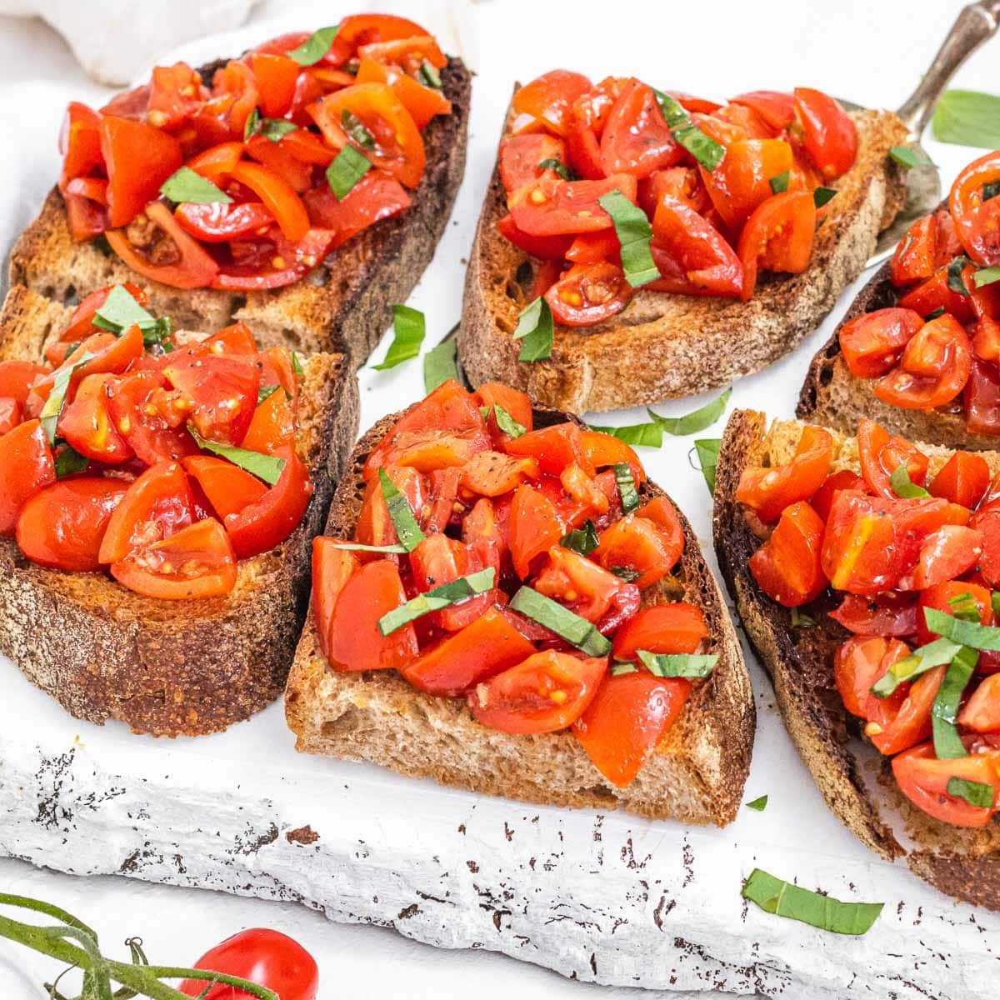

Tomato Bruschetta

Description
Bruschetta is a classic Italian appetizer everyone loves. Learn how to make it with crunchy bread and a tasty garlicky topping of fresh tomatoes, olive oil, balsamic vinegar, and basil.
This recipe is quick and easy to make, and it's the perfect dish for a wonderful dinner with friends and family.
Ingredients
- 10 slices crusty bread
- 1/2 kg tomatoes
- 3 Tbsp extra virgin olive oil
- 2 Tbsp balsamic vinegar
- 2 cloves garlic
- 15 leaves fresh basil
- 1 tsp salt
- 1/4 tsp black pepper
Steps
- Rinse 1/2 kg tomatoes, dry them, then cut them into small dice.
You can discard half of their liquid if they are very watery.
- To a mixing bowl, add the diced tomatoes, 3 tablespoons extra virgin olive oil, 2 tablespoons balsamic vinegar, 1 clove of grated or crushed garlic, 1 teaspoon salt, ¼ teaspoon pepper, and 15 leaves fresh basil (chopped).
Toss until well combined, then taste and just for salt.
Let mixture marinate at room temperature for about 10 - 15 minutes.
In the meantime, slice the bread into 10 to 12 half-inch thick slices (1.2 cm).
Arrange the bread on a baking sheet or grill rack and toast it in the oven with the broiler function until golden and crunchy.
You can turn the slices to broil them on both sides for extra crunchy bread.
- You can turn the slices to broil them on both sides for extra crunchy bread.
- Top each slice with one or two tablespoons of tomato mixture. Don't add too much of the liquid at first. You can sprinkle some on the slices rights before serving the bruschetta.
- Serve on a platter or cutting board as an appetizer, snack, aperitivo, or crunchy and healthy dinner.